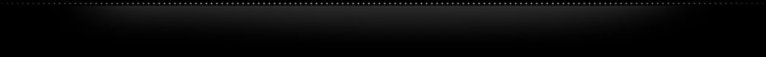

Copyright © 2016 Darran Kartaschew. All rights reserved.
Hi, You've reaches Darran's Project page on Sourceforge. Here you'll find links to the various projects I've worked on over the years, and are able to offer as open source for others to use and enjoy.
I am currently working as a Software Developer at Schatz Forensic, primarily working on tools in support of Digital Forensics. Professionally, I work with a various languages and platforms including C++11 (GNU/Linux, FreeBSD, Mac OSX, Windows, Solaris), Java (SWT including Eclispe e4) and various scripting languages.
I completed a Bachelor of Information Technology (Software Engineering) at Queensland University of Technology (Brisbane, Australia) with distinction in 2013, and have previously worked in the IT industry in various System Administration and Technical roles for the past 15+ years. I am also members with the ACM, and formally held membership with the IEEE, IEEE Computer Society.
My current personal projects focus on desktop applications for Unix based environments (Linux, FreeBSD and Solaris) utilising either C/C++ (GTK+) or Java (Swing). Previous projects have been in a number of languages and environments including but not limited to: Pascal, x86/x64 assembler, b0, C# and Forth. On a range of platforms from MS-DOS, Windows NT/2000/XP/Vista/7, GNU/Linux, Android, FreeBSD and Solaris 9/10/11.
The projects are generally released under either the BSD license or the GPL v3 license, and are available to use under those terms and conditions.
I am reachable at chewy509 at mailcity dot com for any questions you may have.
I currently maintain all current projects on GitHub, my older personal programming projects on Sourceforge, and all my prior Universirty Assessment Pieces on GitHub and BitBucket.
Occillo is Breakout style arcade game. Features 25 levels of gameplay, SVG based graphics for hiDPI displays, and a rocking soundtrack. For more iformation please visit the project homepage at https://dkartaschew.github.io/occillo/
gMTP is one of my larger projects, and is designed to allow easy interface to MTP based devices such as mp3 players, mobile phones and tablets. It's currently available as a package in the majority of Linux based distributions. For more iformation please visit the project homepage at http://gmtp.sourceforge.net
B0 is a low level programming langauge I developed to aid in writing an operating system for 64bit Intel/AMD based systems. B0 can be found at the sourceforge project page at http://b0language.sourceforge.net/
gDesktopChanger is a simple wallpaper changer for GNOME 2 and JDS environments. gDesktopChanger can be found at the sourceforge project page at http://gdesktopchanger.sourceforge.net
256b is an Operating System that takes up a mere 512 bytes and is designed to run directly from a boot sector. 256b is written in x86 assembler and makes use of "unreal-mode" to be able to access upto 4GB of memory. 256b was developed for a programming competition and ranked 5th in the competition standings. Further details on 256b can be found at the sourceforge project page at http://os-256b.sourceforge.net/
The ACM-ICPC Competition Guide for Students is a guide developed for students who wish to take part in the annual ACM-ICPC competition. The guide itself is split into three major sections, the first section on the competition itself, the second on performance considerations, and the third on all common algorithms that are typically required to be competitive within the competition. All alogrithms include a description of the algorithm, an implementation in either C++ or Java, and an associated sample problem that makes use of the algorithm.
The GitHub project including all source code can be found at https://github.com/dkartaschew/acm-comp-guide, and the guide itself in PDF form can be found here. (The guide itself was written using Lyx).
Note: ACM-ICPC Logo copyright of the ACM-ICPC competition
This project was part of a group assessment piece, with myself developing the Android based client application as part of a larger server and client based project. The Android application can be found at https://github.com/dkartaschew/SolarCalculatorAndroid. (The Android client commuicates with a server application that runs on Google App Engine, via SOAP/XML. The component that runs on GAE can be found here and which also includes a desktop based Java application - This component was developed by the whole team).
My projects/repositories at BitBucket are primarily focused on Bioinformatics research in support of rapid search and comparison of genomic information. (Genome data was based on various bacteria). The project utilised ElasticSearch as the supporting platform to conduct the research, and the project included customisation of ElasticSearch and new custom tokenisers to work with the data.
The research report can be located in the bioinformatics.search.report repository, and all supporting software elements for the research can be found here.